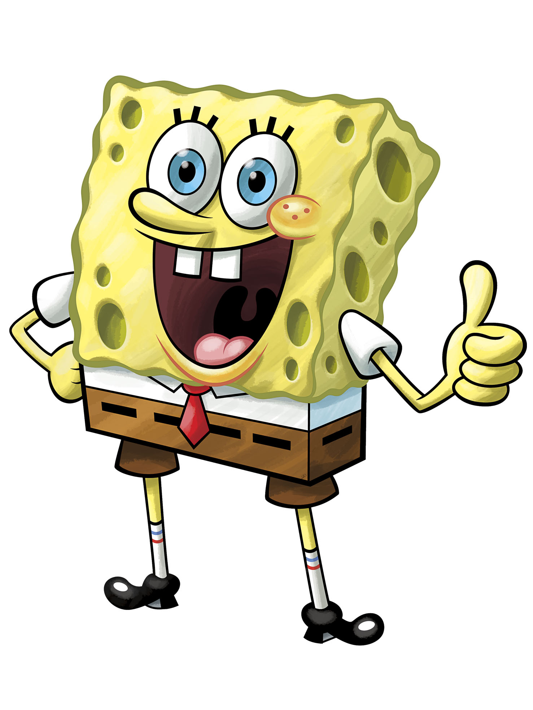

1)Спанч Боб

Описание:
Жёлтая антропоморфная морская губка, которая обычно носит коричневые короткие штаны, белую рубашку с воротником и красный галстук. Живёт в ананасовом доме и работает поваром в ресторане быстрого питания под названием «Красти Краб». Он прилежно посещает лодочную школу миссис Пафф, но никогда не сдавал её; на протяжении всей серии он изо всех сил пытается сдать экзамены, но остаётся непреднамеренно безрассудным водителем лодки. Он безумно оптимистичен и полон энтузиазма по отношению к своей работе и своим друзьям. Интересы – ловля медуз, пускание мыльных пузырей, игры со своим лучшим другом Патриком и непреднамеренное раздражение своего соседа Сквидварда.
День Рождения: 14 июля 1986г.
Пол: Мужской
Рост: 10см
Вес: 30г.
Интересные факты:
-Имеет на теле 40 дырок
-Любит пускать мыльные пузыри
-Ловить медуз вместе со своим лучшим другом Патриком
-Спанч Боб изначально был разработан с зеленой бейсболкой
Назад